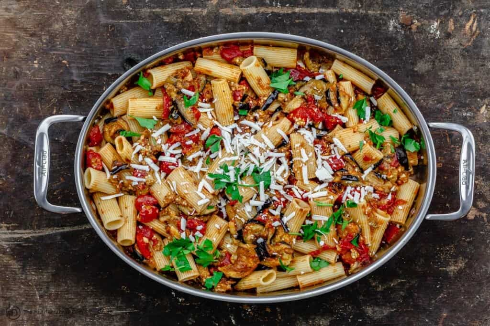

Sicilian Pasta alla Norma

Presentation
This recipe is simple enough to pull off on a weeknight if you start an hour before dinnertime.
It calls for a few simple components and you'll get the hang of it quickly.
Pour yourself a glass of Italian red wine, perhaps a Sangiovese, and make the most of it!
Recipe Short Story
Originally from Catania, a city on the eastern coast of Sicily,
Pasta alla Norma is a delicious Sicilian pasta made with tender eggplant and tossed in a herby tomato sauce
and a sprinkle of ricotta salata cheese.
Ingredients
- Tomato souce:You need extra virgin olive oil and dried oregano.
- Pasta:If you want to make every bite extra flavorful, I recommend you use rigatoni with ridges.
- Eggplant:You need two eggplants.
- Ricotta salata cheese:The perfect final touch!
How to make Pasta alla Norma
- Put some water to boil
- Boil the pasta
- Make the souce
- Fry the eggplants
- Enjoy!